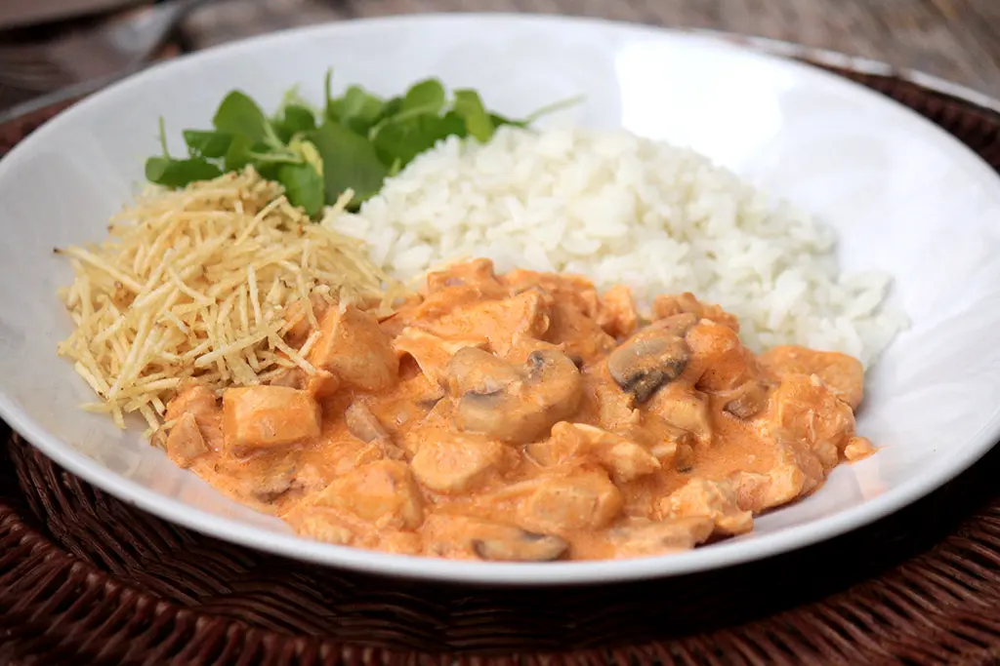
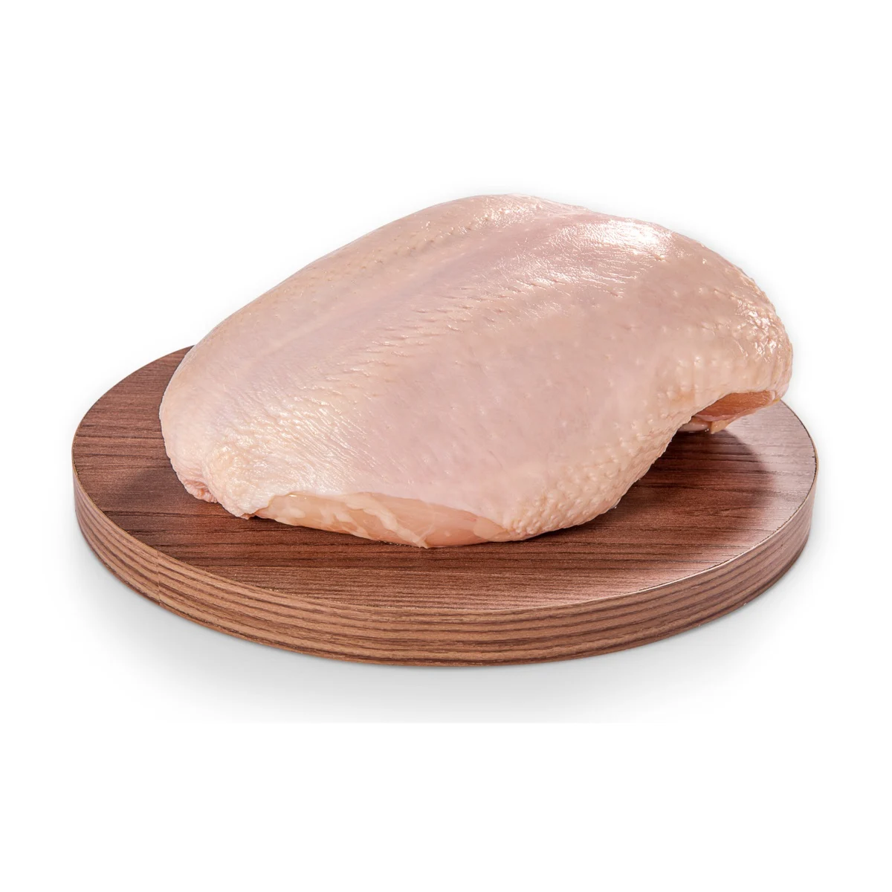
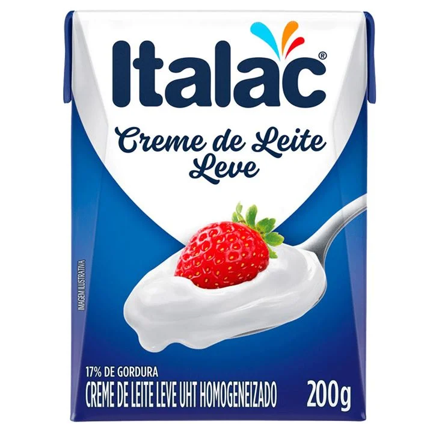
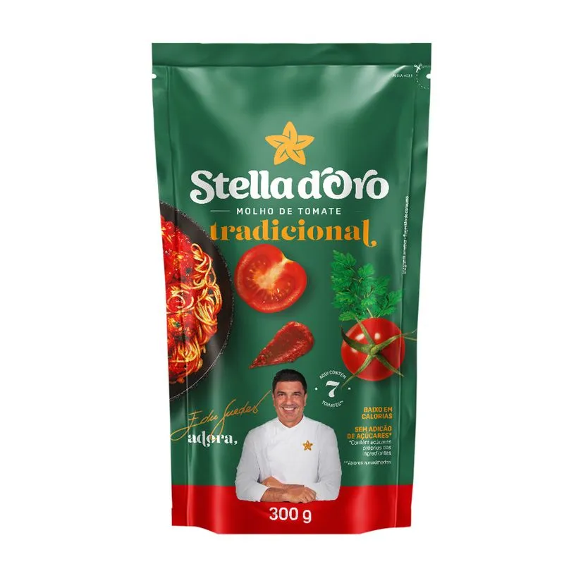
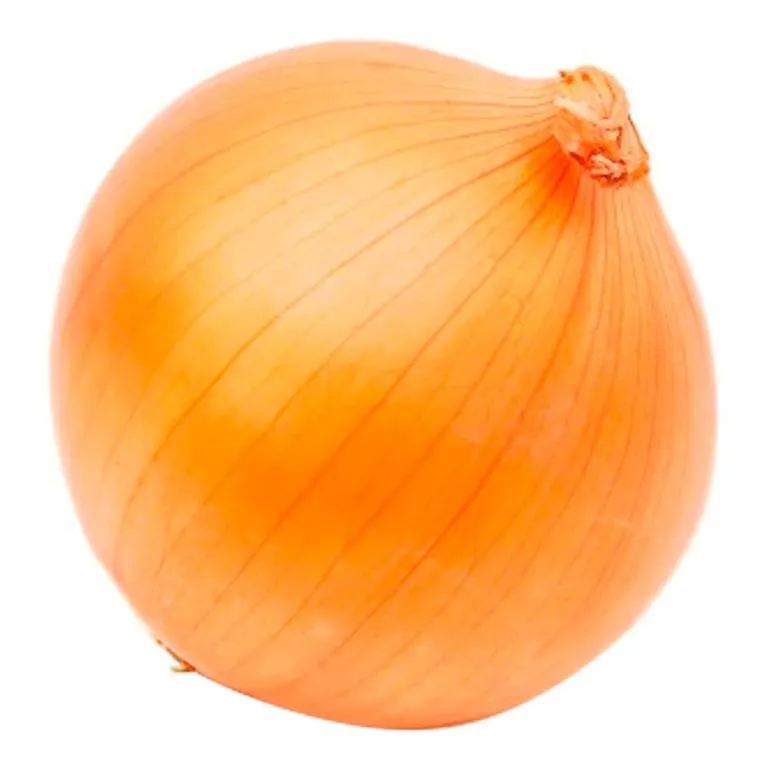
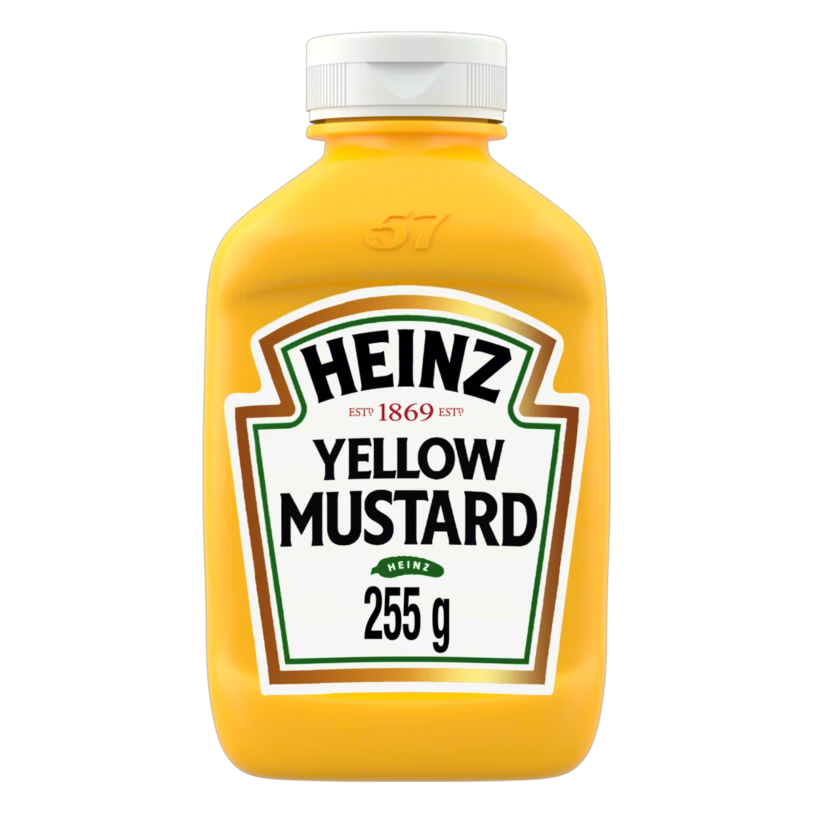

| Ingrediente | Unidade | Preço Unitário | Quantidade | Preço Total |
|---|---|---|---|---|
| Peito de Frango | 1 kg | R$ 24,90 | 500 g | R$ 12,45 |
| Creme de leite | 200 g | R$ 3,49 | 1 caixa | R$ 3,49 |
| Molho de tomate | 300 g | R$ 3,50 | 1 sachê | R$ 3,50 |
| Cebola | 1 kg | R$ 6,00 | 200 g | R$ 1,20 |
| Mostarda | 200 g | R$ 7,00 | 100 g | R$ 3,50 |
Sirva acompanhado de arroz branco e batata palha.